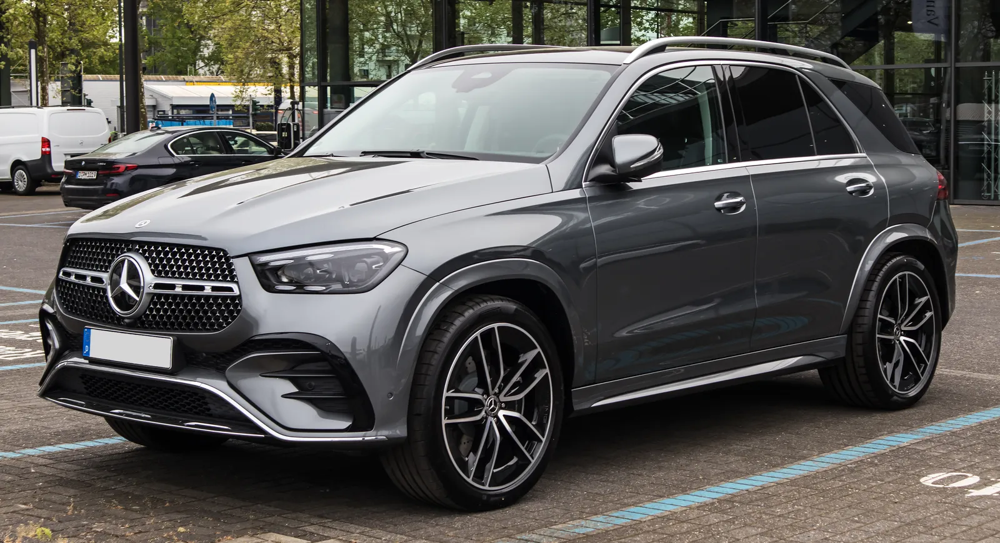
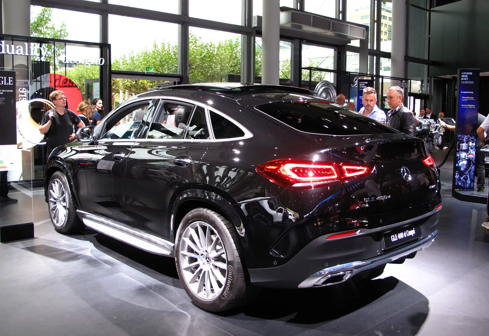
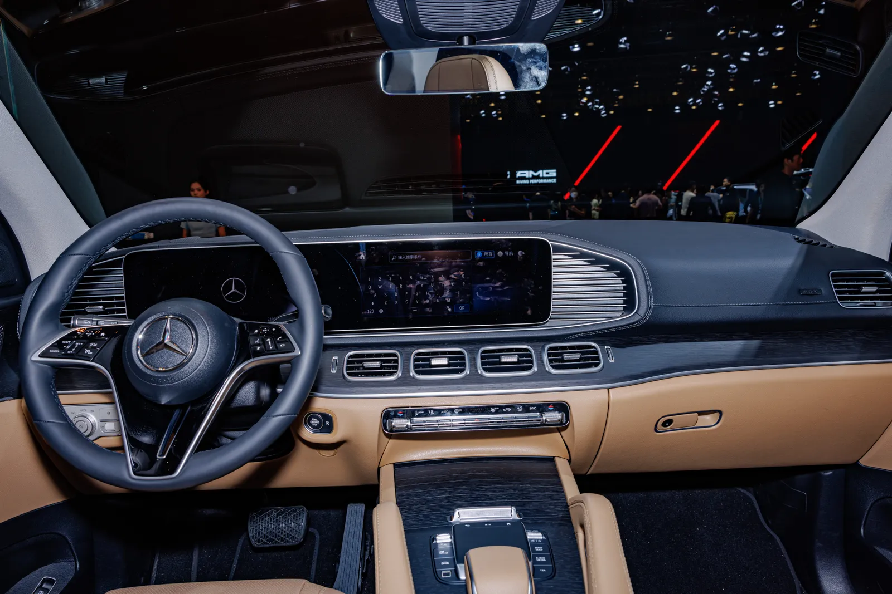
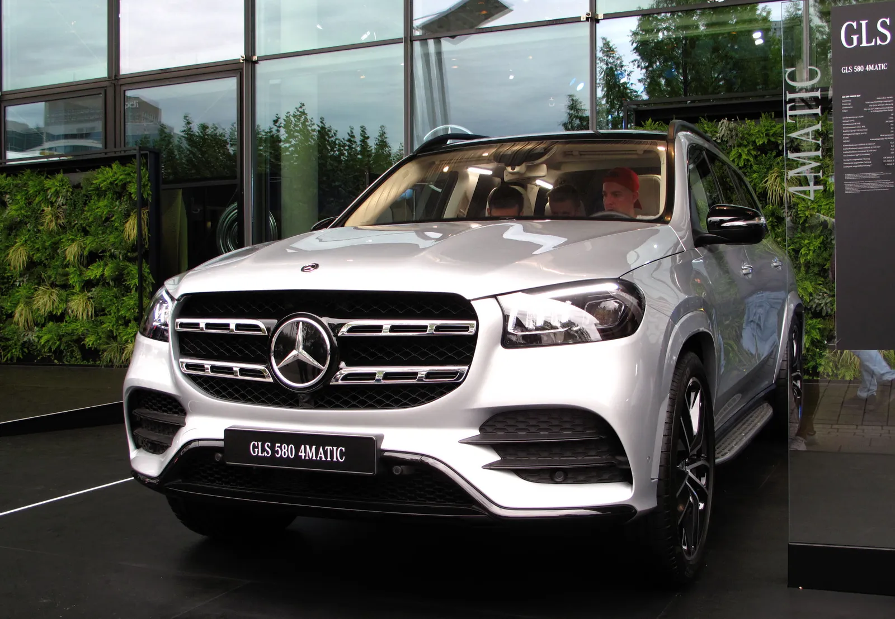

▲ 이번 '140주년 에디션 II'의 베이스가 되는 GLE 450 4MATIC AMG 라인. 알파인 그레이와 옵시디안 블랙 두 색상으로 나온다 ⓒ M 93 / Wikimedia Commons
가격표에 '1'이 아니라 '140'을 새겨 넣은 벤츠, 이번엔 대형 SUV 차례다.
메르세데스-벤츠 코리아가 자동차 발명 140주년을 기념한 한정판 '140주년 에디션 II'를 9월 18일 국내 출시했다. 이번 주인공은 GLE, GLE 쿠페, GLS 세 모델이며, 총 680대로만 판매된다. 지난 4월 E-클래스·GLC·CLE로 첫 순서를 뗀 지 5개월 만의 두 번째 라운드다.
1. 얼마에, 몇 대나 나오나
세 모델 모두 부가세와 개별소비세 5%를 포함한 가격으로 책정됐다. 판매량과 가격을 정리하면 다음과 같다.
| 모델 | 한정 대수 | 색상 배분 | 가격 |
|---|---|---|---|
| GLE 450 4MATIC AMG 라인 | 350대 | 알파인 그레이 175대 · 옵시디안 블랙 175대 | 1억 4,140만원 |
| GLE 450 4MATIC 쿠페 | 230대 | 알파인 그레이 115대 · 옵시디안 블랙 115대 | 1억 4,540만원 |
| GLS 580 4MATIC AMG 라인 | 100대 | 알파인 그레이 100대 | 1억 9,900만원 |
가장 저렴한 GLE 라인업이 절반 이상(350대)을 차지하고, 플래그십 GLS는 알파인 그레이 단일 색상으로만 100대 한정 판매된다는 점이 특징이다.

▲ GLE 쿠페는 230대 한정, 알파인 그레이·옵시디안 블랙 각 115대씩 배정됐다 ⓒ Rutger van der Maar / Wikimedia Commons
2. 나이트 패키지 — 어디가 달라졌나
140주년 에디션 II의 핵심은 '나이트 패키지'로 통일한 다크 테마 외관이다. 다크 크롬 라디에이터 그릴과 AMG 프런트 에이프런, 하이글로스 블랙 사이드미러 및 윈도우 라인 트림이 적용됐고, 도어 핸들도 다크 크롬으로, 도어 실 패널은 블랙으로 마감됐다.
휠은 모델별로 차등을 뒀다. GLE·GLE 쿠페는 22인치, GLS는 23인치 AMG 5-트윈 스포크 경량 알로이 휠이 기본 적용된다. GLS에는 각 바퀴의 감쇠력을 실시간 제어하는 E-액티브 바디 컨트롤 서스펜션도 포함돼, 플래그십다운 승차감과 조종 안정성을 노렸다.
📍 실내는 어떨까
실내는 블랙 나파 가죽과 앤트러사이트 오픈 포어 우드 트림으로 꾸며진다. 외장의 다크 테마와 통일감을 주는 구성으로, 일반형 GLE·GLS보다 한층 무게감 있는 캐빈을 지향한다.

▲ GLE의 실내 레이아웃. 140주년 에디션 II는 여기에 블랙 나파 가죽과 앤트러사이트 오픈 포어 우드를 더한다(사진은 일반 사양) ⓒ Dinkun Chen / Wikimedia Commons
3. '에디션 II'라는 이름, 4월 1탄과 뭐가 달랐나
이번이 처음이 아니다. 벤츠 코리아는 지난 4월 자동차 발명 140주년을 기념해 E-클래스, GLC(및 GLC 쿠페), CLE(쿠페·카브리올레) 등 총 5개 모델 라인에 140주년 에디션을 적용해 판매를 시작한 바 있다. 당시가 세단·중형 SUV·쿠페형 드림카 중심이었다면, 이번 2탄은 대형 SUV 라인(GLE·GLE 쿠페·GLS)으로 무대를 옮긴 셈이다.
즉 벤츠는 한 번에 전 라인업을 기념판으로 채우는 대신, 세그먼트별로 순차 확대하는 방식을 택하고 있다. 4월 1탄에 이어 9월 2탄까지 이어진 만큼, 향후 다른 세그먼트로 추가 확장될 가능성도 열려 있다.
✅ 140주년 에디션, 헷갈리지 않으려면
· 1탄(2026년 4월): E 300 4MATIC AMG 라인, GLC 300 4MATIC(일반·쿠페), CLE 200(쿠페·카브리올레) — 5개 모델
· 2탄(2026년 9월): GLE 450 4MATIC AMG 라인, GLE 450 4MATIC 쿠페, GLS 580 4MATIC AMG 라인 — 3개 모델, 총 680대
· 두 시리즈 모두 1886년 카를 벤츠의 '페이턴트 모터바겐(Patent-Motorwagen)' 발명 140주년을 기념하는 취지는 동일하다
4. 가격, 일반 트림과 비교하면
140주년 에디션 II는 신규 트림이 아니라, 기존 GLE 450·GLS 580 라인업에 한정판 패키지를 얹은 구성이다. 나이트 패키지와 전용 색상, 전용 배지 등이 더해지는 대신, 판매 대수가 정해져 있어 소진되면 재생산되지 않는다는 점이 일반 트림과 가장 큰 차이다.
플래그십인 GLS 580 4MATIC AMG 라인 한정판이 1억 9,900만원으로 책정된 점은, 대형 SUV 시장에서 경쟁하는 다른 프리미엄 브랜드 플래그십 모델들과 견줘도 가격 저항선에 걸쳐 있는 수준이다. 한정판 프리미엄을 얼마나 붙였는지는 정확한 일반 트림 가격과의 직접 비교가 필요하지만, 나이트 패키지·전용 휠·서스펜션 옵션까지 포함된 구성임을 감안하면 무리한 가격은 아니라는 평가가 나온다.

▲ 플래그십 GLS 580 4MATIC. 140주년 에디션 II는 이 모델을 베이스로 알파인 그레이 100대만 한정 판매한다 ⓒ Rutger van der Maar / Wikimedia Commons
5. 관전 포인트
680대라는 숫자는 결코 넉넉한 물량이 아니다. 특히 GLS 100대는 국내 대형 SUV 수요를 고려하면 조기 소진 가능성이 거론된다. 벤츠 코리아 공식 채널을 통해 딜러별 배정 물량과 계약 방식을 확인하는 것이 실구매를 고려하는 소비자에게 필요한 다음 단계다.
140주년 기념 모델의 세부 사양과 딜러망 안내는 벤츠 코리아 공식 홈페이지에서 확인할 수 있다. 오토헤럴드 원문 기사 바로가기
6. 요약
메르세데스-벤츠 코리아가 자동차 발명 140주년을 기념해 GLE·GLE 쿠페·GLS '140주년 에디션 II'를 680대 한정으로 출시했다. 가격은 1억 4,140만원부터 1억 9,900만원까지이며, 나이트 패키지와 전용 색상(알파인 그레이·옵시디안 블랙), 블랙 나파 가죽 실내가 공통 사양이다.
이번이 처음이 아니라, 지난 4월 E-클래스·GLC·CLE로 시작된 140주년 에디션 시리즈의 두 번째 순서다. 세그먼트별로 순차 확장하는 방식인 만큼, 추가 라인업 확대 여부도 지켜볼 대목이다.